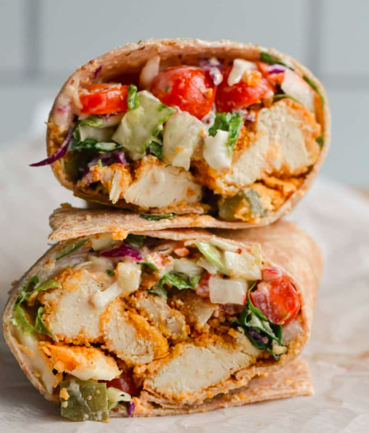

Vegan Chick'n Wrap

Super simple, super fast and keeps me from wolfing the entire contents of my snack bin because I forgot to eat lunch again
Ingredients:
- Vegan Chickn' Patty, heated
- Ezekiel Tortilla
- Chopped Tomato and Lettuce
- Thinly sliced pepperoncini
- vegan Mayo
- Mustard
Steps:
- Toast the tortilla on the stovetop. Directly over low flame on a gas stove, in a pan on an electric stovetop
- Assemble all the ingredients inside the toasted wrap and enjoy